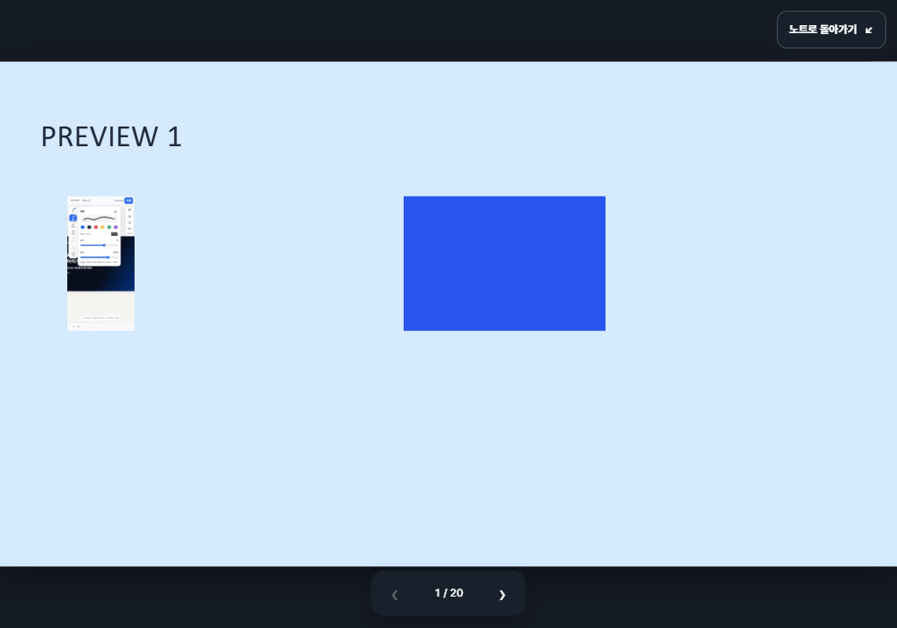
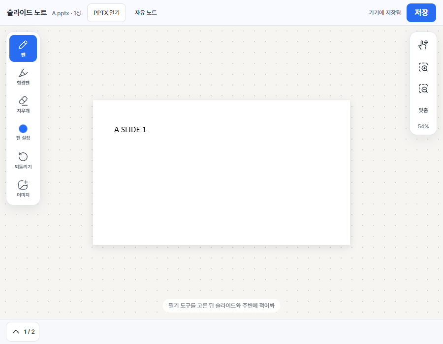
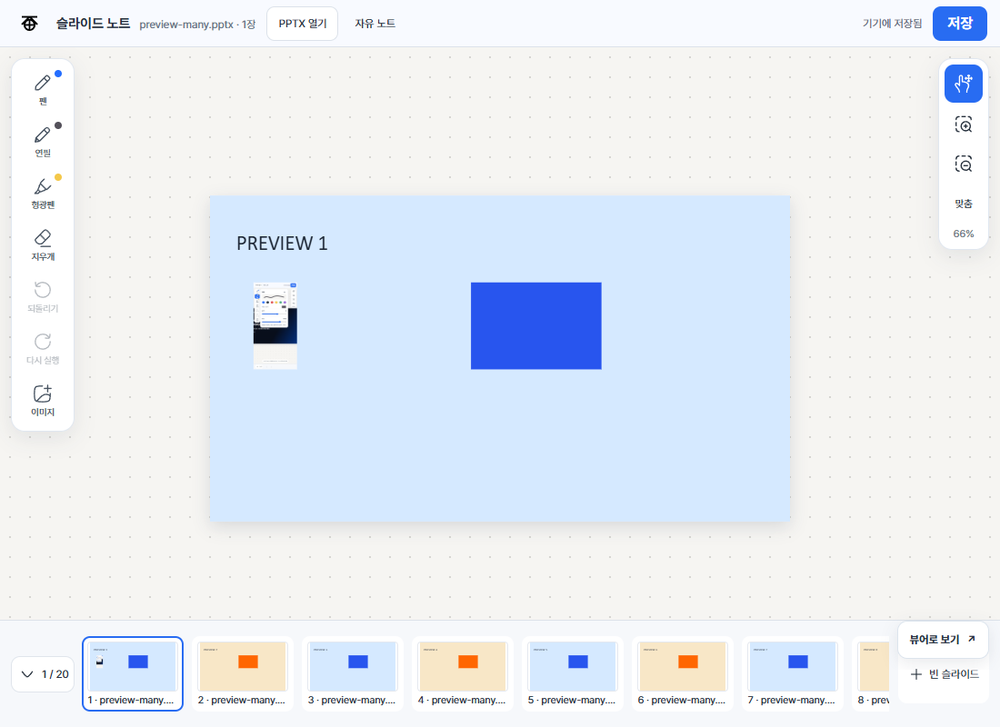

뷰어 모드
슬라이드를 크게 보고 좌우로 넘겨. 화면 전환도 방향을 따라 자연스럽게 이어져.
PPT를 위한 넓은 작업대
자료를 보며 떠오른 생각을 어디에 적을까.
슬라이드 위에도, 그 주변의 여백에도 자유롭게 쓰고 그려봐.
Android · 초기 시험판 0.1.9

01 / WORKSPACE
슬라이드를 가운데 두고 주변을 마음껏 활용해. 내용에 바로 표시해도 좋고, 옆에 질문을 적거나 아래에 아이디어를 이어 그려도 좋아.
화면을 옮기고 확대하면서 필요한 곳으로 가까이 다가갈 수 있어.
02 / TWO MODES
자료에 집중하는 뷰어와 생각을 펼치는 노트를 오가며 같은 슬라이드를 이어 봐.

슬라이드를 크게 보고 좌우로 넘겨. 화면 전환도 방향을 따라 자연스럽게 이어져.

이동을 기본으로 시작해 원하는 곳에 필기하고, 작은 미리보기로 다른 장을 찾아봐.
03 / TOOLS
도구마다 손에 맞는 색과 굵기를 기억해. 필기하다 그림이 떠오르면 연필로 바꿔 그려도 돼.
슬라이드에 표시하고, 중요한 생각을 덧붙여.
색과 굵기, 농도를 골라 스케치해. 지원하는 펜은 필압도 반영해.
손가락이나 터치펜으로 쓰고, 두 손가락으로 확대해.
슬라이드를 넘겼다가 돌아와도 적어둔 생각이 남아 있어.
04 / GET STARTED
슬라이드 노트는 Android에서 시험해볼 수 있어.
다운로드한 APK를 열고 기기의 설치 안내를 따라줘.
v0.1.9 · 개발 중인 시험판 · 실제 기기 확인이 필요한 기능이 있어
A LITTLE MORE
열어 본 PPTX 원본은 수정하지 않아. 필기는 앱의 기기 내 저장소에 따로 보관해.
아직 별도의 백업 파일이나 PDF로 내보내는 기능은 없어. 앱 내부에 저장돼.
응. 손가락과 일반 터치펜으로 필기할 수 있어. 펜의 필압은 기기 지원 여부에 따라 달라져.